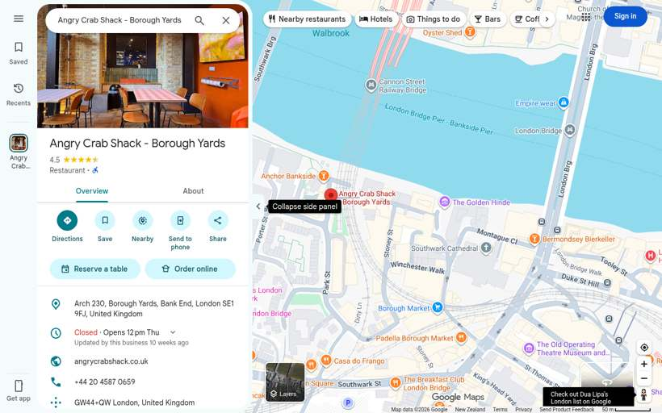
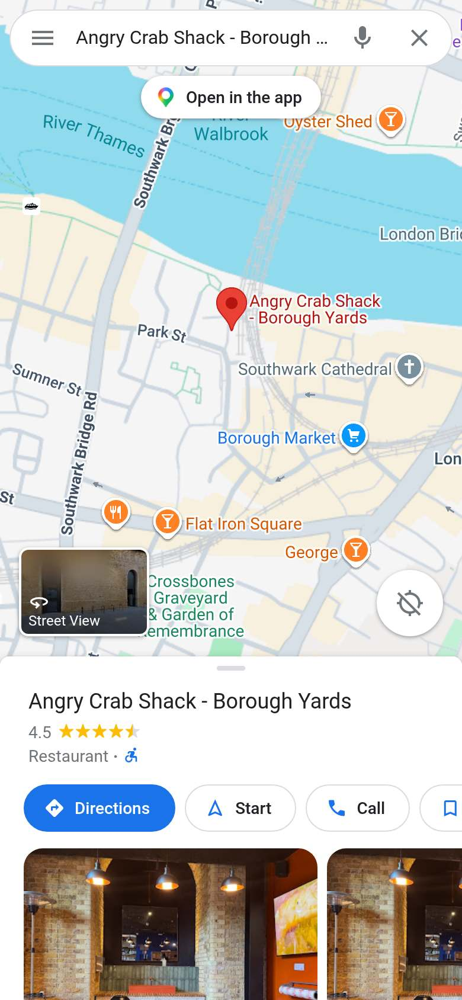
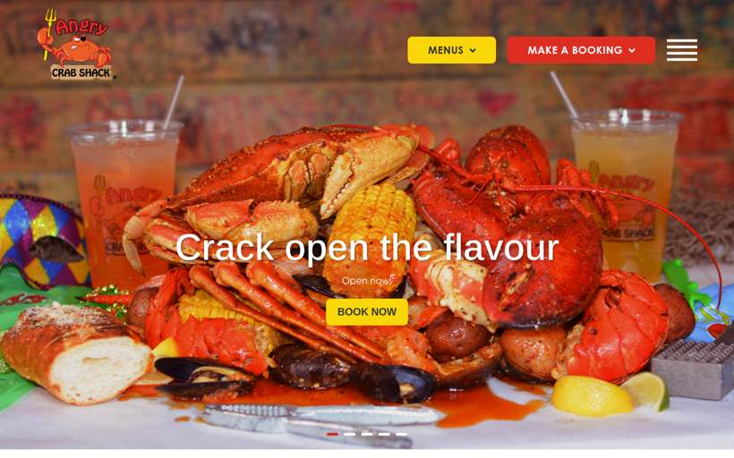
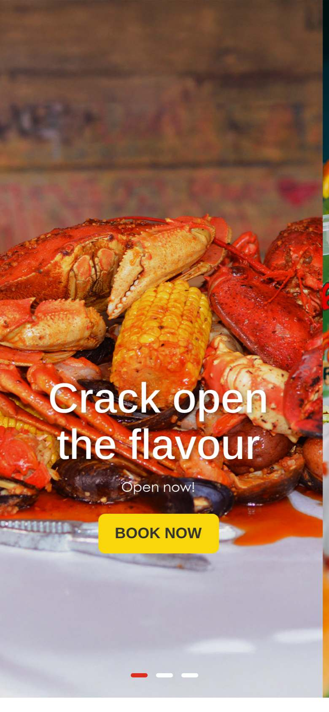
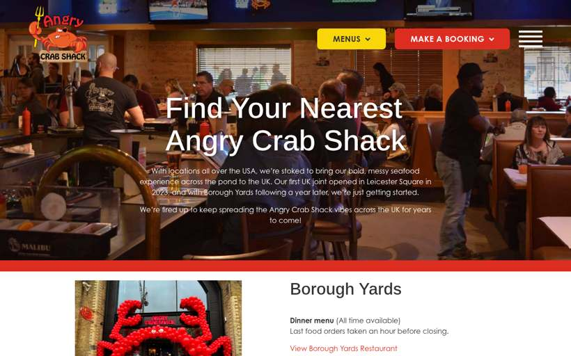
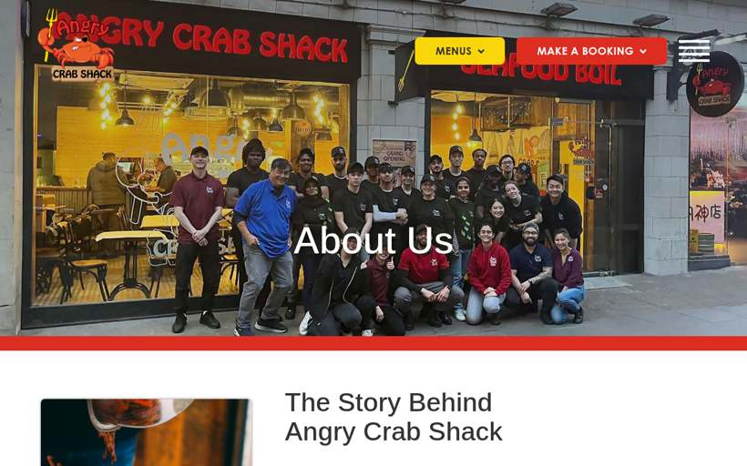

Angry Crab Shack
United Kingdom · 8 photos · tap for source
🛋️ Fit-out3 photos · ← → / swipe / tap to enlarge


🦞 Food5 photos · ← → / swipe / tap to enlarge


⚑ Highlightsflagged for Seb · sourced
- Where27 open incl. 2 London (Jul 2026)London · checked checked 19 Oct 2026 locations ↗
- NZ/AUNone found
- SignalIPONZ title search 22 Oct 2026: no mark source ↗
- Signal2026 int'l targets: Brazil, Mexico, Gulf, Singapore; no NZ/AU source ↗
- LookWhat stands out in the photostipped onto paper (5) · big trays (3) · crab legs/whole crab (2) · lobster (2) · boil-in-a-bag (1) · paper-covered tables (1) · buckets/pails (1) Source: CLIP tags, attrs.json
- Photos3 fit-out · 5 food · 0 otherTap any photo caption for its source page.
📍 27 open incl. 2 London (Jul 2026) (checked 19 Oct 2026)None found IPONZ title search 22 Oct 2026: no mark · 2026 int'l targets: Brazil, Mexico, Gulf, Singapore; no NZ/AU
Listing & website

Google listing · desktop
Google listing · phone
Website · home
Website · home · phone
Website · view locations
Website · about us📍 2 branches found on Google Maps (20 Oct 2026, lower bound)
- Angry Crab Shack - Borough Yards City of London, Arch 230, Borough Yards, Bank End · ★4.5 (666)
- Angry Crab Shack London, 19a Rupert St · ★4.5 (2,229)